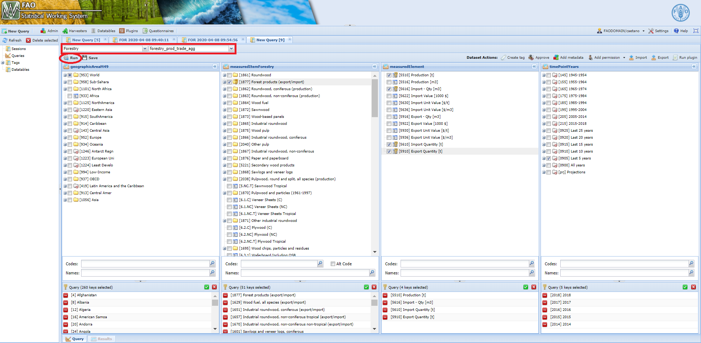

Chapter 5 The faoswsForestryAggregation module
The module faoswsForestryAggregation comprehend the main step in the Forestry Production and Trade process as it calculates the aggregates by region and item that will be disseminated through FAOSTAT.

Figure 5.1: Workflow of the faoswsForestryAggregation module
5.1 Steps
The module can be basically split into four parts as below.
5.1.1 Read in the data
The module uses the forestry_prod_trade dataset as input. According to the technical unit, they will be constantly changing this dataset throughout the data cycle, specially when new data come in or the officers decide to make changes based on their domain knowledge.
5.1.2 Get regional aggregation
After reading in the input dataset, the module geographically aggregates the primary commodities based on FAOSTAT - UNSD M49 mapping. Please, for a full representation of this table consult either the Appendix A.11 or this link.
5.1.3 Get Forestry commodity aggregation
Once a data set with regional aggregate is ready, the module moves to producing commodity aggregations at the national and regional levels. Since there is an interplay between commodity groups, the module carries the aggregation in tandem, with three commodity groups being aggregated first and then rest of aggregates.
| CommodityGroup | CommodityGroupName | CommodityCode | CommodityName |
|---|---|---|---|
| 1656 | Chemical wood pulp | 1660 | Chemical wood pulp, sulphite, unbleached |
| 1656 | Chemical wood pulp | 1661 | Chemical wood pulp, sulphite, bleached |
| 1656 | Chemical wood pulp | 1662 | Chemical wood pulp, sulphate, unbleached |
| 1656 | Chemical wood pulp | 1663 | Chemical wood pulp, sulphate, bleached |
| 1656 | Chemical wood pulp | 1686 | Chemical wood pulp, sulphite |
| 1674 | Printing and writing papers | 1612 | Printing and writing papers, uncoated, wood containing |
| 1674 | Printing and writing papers | 1615 | Printing and writing papers, uncoated, wood free |
| 1674 | Printing and writing papers | 1616 | Printing and writing papers, coated |
| 1675 | Other paper and paperboard | 1676 | Household and sanitary papers |
| 1675 | Other paper and paperboard | 1681 | Wrapping and packaging paper and paperboard |
| 1675 | Other paper and paperboard | 1683 | Other paper and paperboard n.e.s. |
| 1675 | Other paper and paperboard | 1617 | Case materials |
| 1675 | Other paper and paperboard | 1618 | Cartonboard |
| 1675 | Other paper and paperboard | 1621 | Wrapping papers |
| 1675 | Other paper and paperboard | 1622 | Other papers mainly for packaging |
5.1.4 Get Unit values
Once the import and export figures are calculated for values and quantity, the unit price, which is the quotient between values and quantity, can be easily calculated for both primary and group commodities at the national and regional levels.
5.1.5 Get back the original flags
With unit values already in the data sets (national and regional), the last step is to recovery the flags from the original input. Data records added during the processing come either from geographic or commodity aggregation. Therefore, these records have “E” (Aggregation) as flagObservationStatus and “s” (summation) as flagMethod.
5.1.6 Convert FAOSTAT regions to SWS regions
The processed regional data set uses FAOSTAT codes for regions. To be able to save the results in the SWS, regions must be converted to SWS regional codes compatible with the geographicAreaM49 in the forestry_prod_trade_agg dataset. For this, the module uses the following function.
5.1.7 Binding national and regional data
Binding national and regional data sets.
5.1.8 Compare before and after aggregations
As a validation tool, the faoswsForestryAggregation module also needs to return what has changed from the input dataset. The module flags values where the absolute difference between the input dataset and the aggregate dataset is higher than 0.1.
5.2 Running the module
Log in the SWS;
Click on New Query;
Select Forestry domain and forestry_prod_trade_agg dataset;
Select whatever geographicAreaM49, measuredElement, measuredItemForestry and timePointYears. After that, run the query;
Figure 5.2: Steps 1 to 4
Select the faoswsForestryAggregation module, choose the parameters (Start and End year) and click on Run plugin;
Figure 5.3: Select the faoswsForestryAggregation plugin and run it
6. Wait for a window message to appear in the session: ForestryAggregation module ran successfully!!!;
7. Click on Save to dataset.